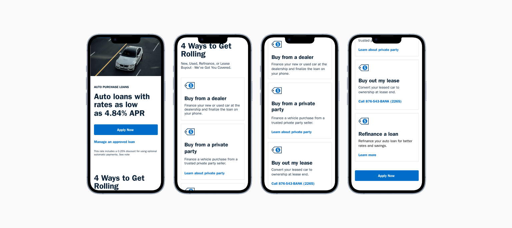
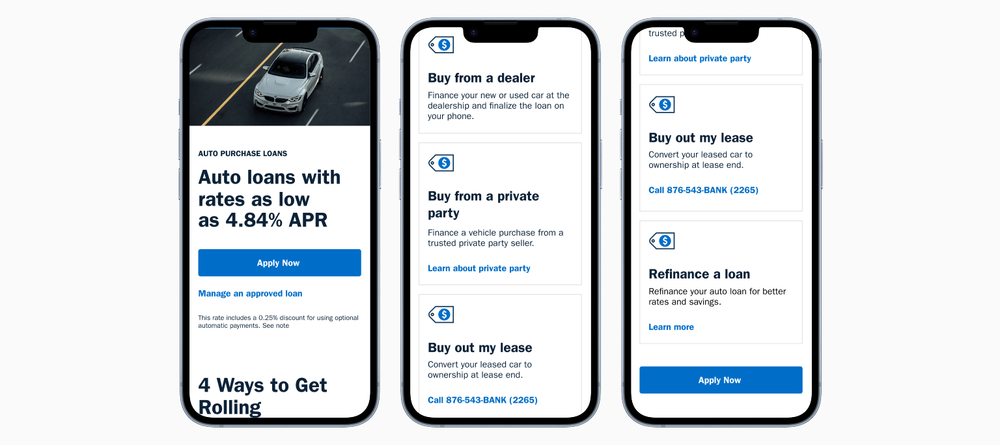

UX STRATEGY
Auto Loan Application Redesign

Auto loan application redesignimpact & Results
One redesign. Two outcomes that compounded.
19%
Reduction in
application dropoffs
Measured at the highest abandonment point in the prior flow.
The redesign also produced a reusable progressive disclosure
component now part of the banking design system.
Why This Mattered
Experience gaps were creating avoidable losses.
H3 Title
Auto lending represents a critical revenue stream with
significant competitive pressure from dealer financing and
fintech challengers. Application abandonment created revenue
leakage at the point of highest member intent.
H3 Title
With 67% of traffic coming from mobile, the desktop‑first flow
created avoidable friction.
The redesign aligned with enterprise digital transformation while directly improving clarity, usability, and conversion.
The redesign aligned with enterprise digital transformation while directly improving clarity, usability, and conversion.
THREE OBSTACLES
Members were failing before they ever applied.
Content Overload
Legal requirements added extensive disclosure text to the page.
The information section dominated the page, pushing key actions
below the fold. Members could not find answers to their most
common questions.
Unclear Prioritization
All content was treated equally with no visual hierarchy.
Critical information was buried alongside legal disclaimers.
Members could not determine if they were finding the information
they needed.
Accessibility Concerns
Our primary audience of older military veterans struggled with
dense text blocks. Mobile users (67% of traffic) faced
especially difficult navigation. No clear path existed to find
specific loan information.
H3 Title
Legal requirements added extensive disclosure text to the page.
The information section dominated the page, pushing key actions
below the fold.
Before: Legal disclosures dominated prime real estate. Members
couldn't find what they came for.
Information section dominated the page.
All content was treated equally. No visual hierarchy.
No clear path for specific loan information.
All content was treated equally. No visual hierarchy.
No clear path for specific loan information.
The Design Framework
Every decision had a reason.
Progressive Disclosure
Show only what members need at each decision point. Collapsed
legal disclosures behind clear "Learn more" links, reducing
cognitive load while maintaining full compliance.
Compliance as a Design Constraint
Legal disclosure requirements were not an obstacle to work
around. They were a structural input that shaped every layout
decision from the start.
Visual Hierarchy as Guidance
Use size, weight, and spacing to communicate importance.
Members should scan and immediately understand what to do next
without reading every word on the page.
Clarity Over Completeness
Members needed the right thing at the right moment, not
everything at once. Every section was evaluated against
whether it moved them forward.
THE REDESIGN
Structure did the work that copy could not.
Restructured Information Architecture
Separated rate information from application entry points.
Created a clear visual path from awareness to application.
Moved secondary content below primary actions so members reach
decisions faster.
Progressive Disclosure Pattern
Collapsed loan type details into expandable cards. Members see
key rates and CTAs immediately, with full details available on
demand. Legal disclosures accessible without dominating the
view.

After: Clear hierarchy and scannable content. Before and After
Before and After
STAKEHOLDER ALIGNMENT
The hardest design problem was not on the screen.
Legal and Compliance Partnership
Led working sessions with legal, compliance, and project teams
to separate non-negotiable requirements from opportunities for
simplification. Annotated prototypes became the shared language
for evaluating compliance-friendly design solutions.
Marketing and Content Strategy
Partnered with marketing on plain-language content that balanced
brand voice with regulatory requirements. Established reusable
content patterns for lending products.
Technology Collaboration
Collaborated with engineering to balance design intent with
component library constraints and technical feasibility.
Prioritized changes by impact to support phased delivery.
H3 Title
Legal requirements added extensive disclosure text to the page.
The information section dominated the page, pushing key actions
below the fold.
REFLECTION
The questions I would still pursue.
Legal & Compliance Partnership
The 19% dropout reduction measured the right abandonment
point, but not the right outcome: completion. Whether members
who made it through actually finished their applications at a
higher rate was the number I never got.
Progressive disclosure works when users already know what they don't know, and I'm not convinced it holds the same way for a first-time borrower as it does for someone refinancing. I'd run sessions specifically with first-time applicants before calling that pattern a success.
Progressive disclosure works when users already know what they don't know, and I'm not convinced it holds the same way for a first-time borrower as it does for someone refinancing. I'd run sessions specifically with first-time applicants before calling that pattern a success.
Marketing & Content Strategy
Partnered with marketing on plain-language content that
balanced brand voice with regulatory requirements. Established
reusable content patterns for lending products.